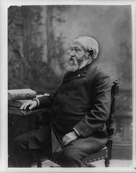

Grandson of President William Henry Harrison. He won the electoral vote in 1888 while losing the popular vote. He signed the Sherman Antitrust Act, the Sherman Silver Purchase Act, the McKinley Tariff and a large expansion of Civil War pensions, and six new states joined the Union. His Congress was the first in peacetime to spend a billion dollars.
Shaded areas show the years in office, with a few years before and after for comparison. Budget years ran July to June until 1976 (now October to September), so each year's figures cover parts of two calendar years.
June 30, 1888 (end of fiscal 1888): $1.69 billion → June 30, 1892 (end of fiscal 1892): $1.59 billion
Daily debt figures don't exist before 1993, so Harrison's numbers use the fiscal years closest to his term, the same rule as every other page.
Debt as a share of GDP. Above 100% means the debt is bigger than a year of everything the country produces.
Money borrowed each budget year (below the line) or paid down (above). The White House budget office's yearly figures begin in 1901.
1890: 4.0% → 1892: 3.0%. Yearly averages. National estimates by economist Stanley Lebergott begin in 1890.
How much prices rose each year (consumer price index).
What everyday prices and paychecks did while in office.
Prices use the consumer price index (MeasuringWorth). The minimum wage is the federal rate set by Congress.
143 orders. Count from the American Presidency Project.
Yearly counts aren't reliable for this era. Orders were not numbered until 1907, when the State Department numbered the ones already in its files, and many orders were never numbered at all, so only the total is shown.
Source: American Presidency Project: executive orders (full list of every order).
Most orders in this era were routine, such as setting aside public land or exempting jobs from civil service rules.
Incomplete: orders before 1929 were not numbered or collected consistently. This archive has 67 of the roughly 143 orders counted for this president.
Source: Executive Orders Archive, compiled from the American Presidency Project and the Federal Register. Topics are the archive's automated tags; "Revoked" and similar labels come from the Federal Register's records.
A pardon wipes out the punishment for a federal crime; a commutation shortens a sentence but leaves the conviction. The Justice Department's published counts begin in 1900.
The Justice Department's published clemency counts begin in fiscal 1900, so there are no reliable yearly totals for this presidency.
Source: U.S. Dept. of Justice, clemency statistics, which lists every recipient with the crime and sentence.
The crime: Polygamy and 'unlawful cohabitation' under the Edmunds Act
Sentence: Various
Why it drew attention: Granted after the Latter-day Saints church renounced plural marriage in 1890, for those who had since obeyed the law. Cleveland broadened it in 1894.
SourceThe same checklist for every president. Tap a row for details and sources.
No articles of impeachment were voted on.
Never charged.
No member of his cabinet or White House staff was convicted.
None were appointed.
No official investigation found he used federal agencies against opponents.
What happened, what was proven, and how it ended.
A letter from the Republican national treasurer, William Dudley, told Indiana party workers to 'divide the floaters into blocks of five' and put a trusted man in charge of each, which critics read as a plan to buy votes.
Outcome: Dudley was indicted, but the case was dropped after the judge narrowed the law.
SourceThe Army's 7th Cavalry killed about 250 to 300 Lakota, many of them women and children, while disarming a camp at Wounded Knee Creek, South Dakota.
Outcome: An Army inquiry cleared the commander, and 20 soldiers received the Medal of Honor. Congress expressed 'deep regret' in 1990.
SourceRaised average tariff rates to about 49 percent, and prices on many goods went up.
Outcome: Republicans lost the House in a landslide that fall; Harrison lost in 1892.
SourceWidely quoted remarks, with the context they were said in.
Providence has given us the victory.
I pity the man who wants a coat so cheap that the man or woman who produces the cloth or shapes it into a garment will starve in the process.